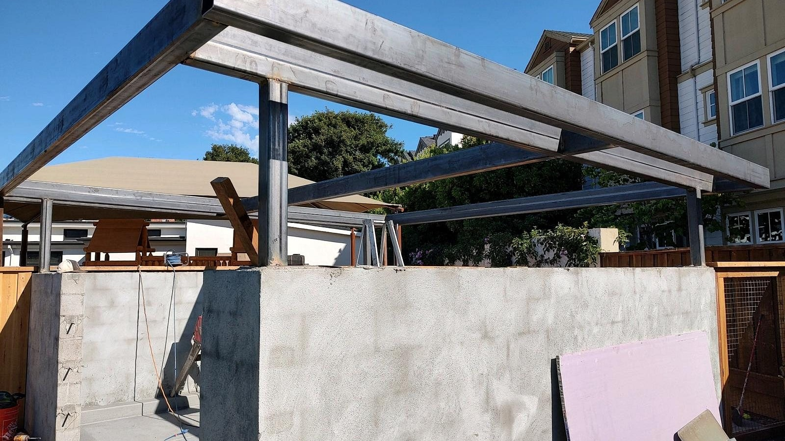

Custom Roof Metal Structure
Custom fabricated roof steel structure with welded beams, framing, and support connections.

Custom Metal Fabrication
Some jobs need a part made, fit, reinforced, or adjusted on site or in the shop. Production Welding handles small fabrication and custom metal details for practical real-world use.
Good Fit Projects
Production Welding handles mobile and shop work, so the fastest way to quote accurately is to send photos, measurements, the job city, and any access details.
Project Examples
A few examples from the Production Welding project gallery that match this service.
Custom fabricated roof steel structure with welded beams, framing, and support connections.

Custom steel planter box fabrication for an exterior balcony and hillside property.

Custom fabricated steel support built for stairs with welded framing and fit-up details.
Estimate Process
Photos help confirm whether the material can be welded safely on site, whether shop work is a better fit, what prep is needed, and which tools should be used.
Related Services
When the metal is attached to a property, trailer, gate, machine, or job site, mobile service keeps the repair simple. Production Welding also handles shop work when a part or assembly is better welded off site.
Gates and railings take daily abuse. Production Welding handles practical repair and reinforcement work for homes, apartments, shops, yards, and commercial properties.
A broken trailer, bracket, ramp, or piece of equipment can stop work fast. Production Welding handles mobile repair welding when the item is better fixed where it sits.
Get a Welding Estimate
Call Production Welding or send the project details, location, photos, and timing. Mobile service and shop work are available across the Bay Area.